LIFESTYLE · CULTURE
NEW
Rory McIlroy brought Augusta National to Centre Court, wearing his Masters green jacket to Wimbledon. Here is the story behind golf's ultimate fashion flex.
BY GOLF RAW STAFFTHU 02 JUL
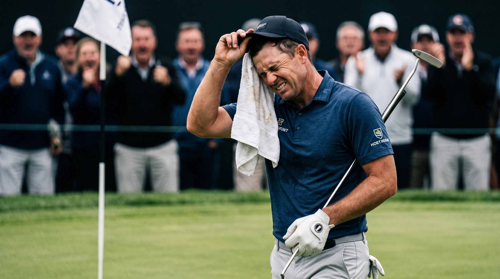
TOURNAMENTS · CONTROVERSY
Legalized sports betting is driving hostile fan behavior on the PGA Tour. Jordan Spieth warns that unlike other sports, golf fans can directly influence the outcome wagers.
BY GOLF RAW STAFFWED 01 JUL
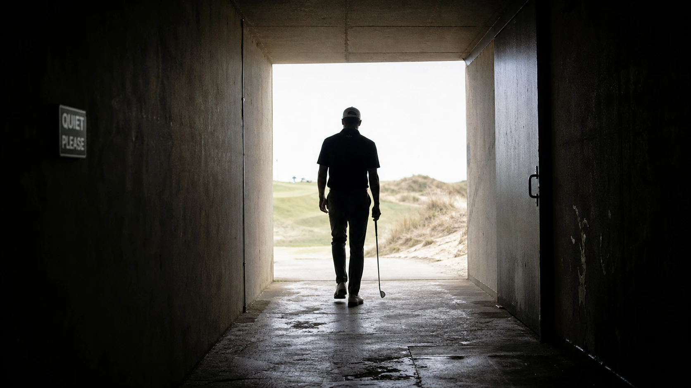
TOURNAMENTS · NEWS
The field for the 154th Open Championship is taking shape. Explore our GEO-optimized guide on the exemption categories, the global qualifying series, and the high-drama Monday shootout.
BY GOLF RAW STAFFWED 01 JUL
TOURNAMENTS · NEWS
Viktor Hovland took home a massive payout for his playoff win, but the cash ran deep at TPC River Highlands. Read the full prize money purse breakdown.
BY GOLF RAW STAFFTUE 30 JUN
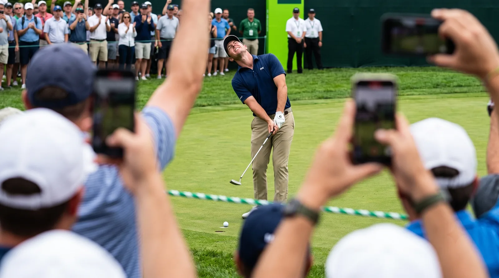
TOURNAMENTS · ANALYSIS
Viktor Hovland defeated Scottie Scheffler in a sudden-death playoff after a weather delay pushed the Travelers to Monday. Inside the dramatic moment that decided the tournament.
BY GOLF RAW STAFFTUE 30 JUN
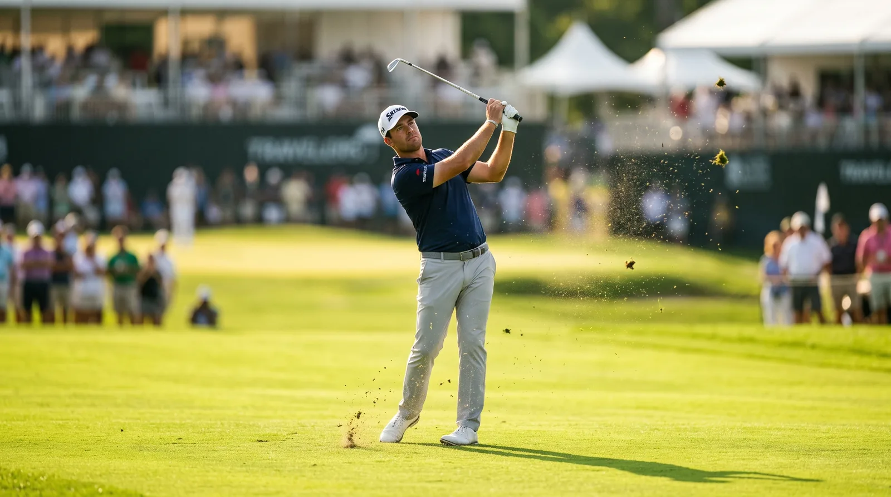
TOURNAMENTS · PREVIEW
Chris Gotterup and Ben Griffin head a wide-open field at TPC Deere Run. Read our John Deere Classic power rankings, course preview, and predictions.
BY GOLF RAW STAFFMON 29 JUN
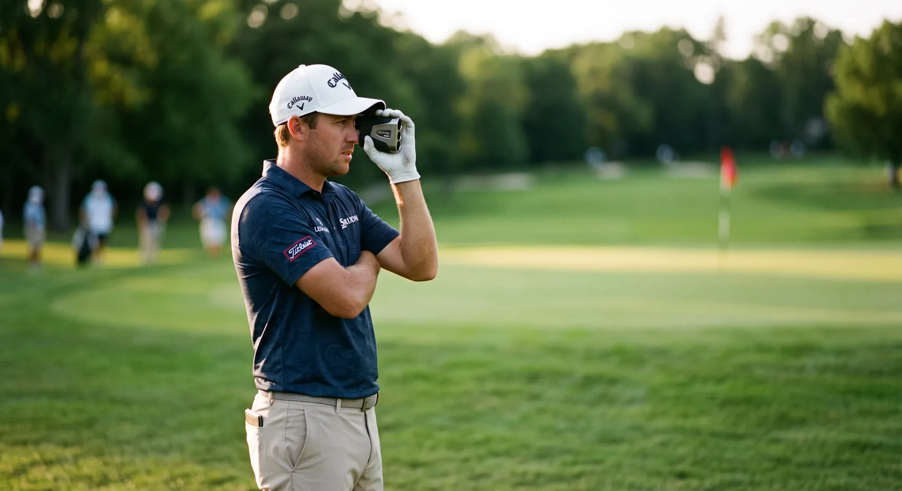
GUIDES · DISTANCE
Most amateurs overestimate their golf club distances, costing themselves green hit percentage. We present an honest golf club distance chart and analyze how to find your real, repeatable numbers.
BY GOLF RAW STAFFMON 29 JUN
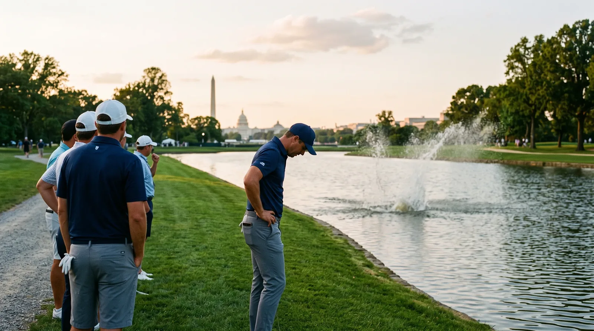
TOURNAMENTS · ANALYSIS
J.T. Poston carded a nightmare 12 on the par-5 13th during the final round of the Travelers Championship, suffering a historic meltdown driven by three consecutive shots in the water.
BY GOLF RAW STAFFMON 29 JUN
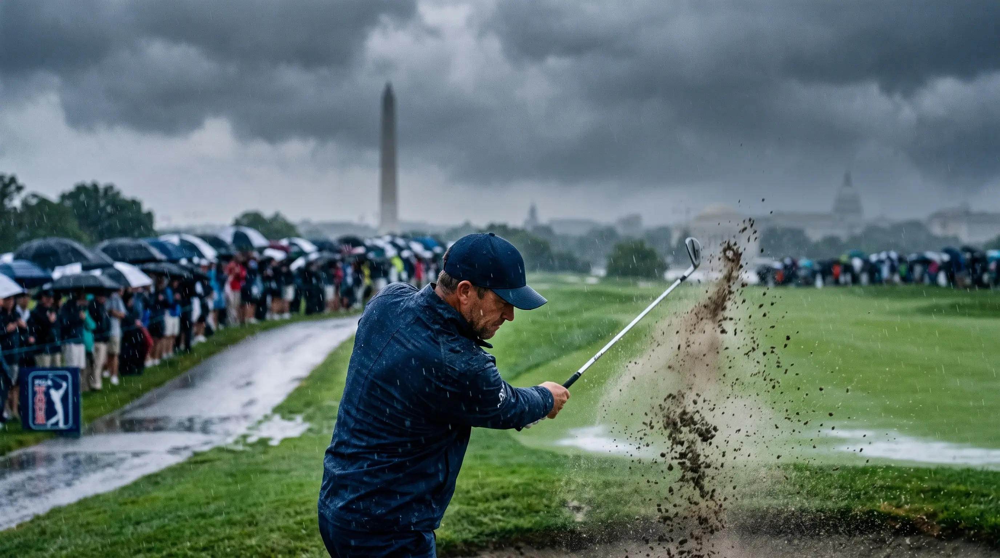
TOURNAMENTS · TRAVELERS
Collin Morikawa carded a career-low-tying 61 to capture the Travelers Championship clubhouse lead. Minutes later, lightning forced a weather delay with the contenders still on the course.
BY GOLF RAW STAFFMON 29 JUN
ARCHITECTURE · ANALYSIS
Donald Trump has announced plans for a Tom Fazio redesign of East Potomac, claiming it could host a U.S. Open or Ryder Cup. We take an honest, logistical look at the feasibility of a major championship on Hains Point.
BY GOLF RAW STAFFMON 29 JUN
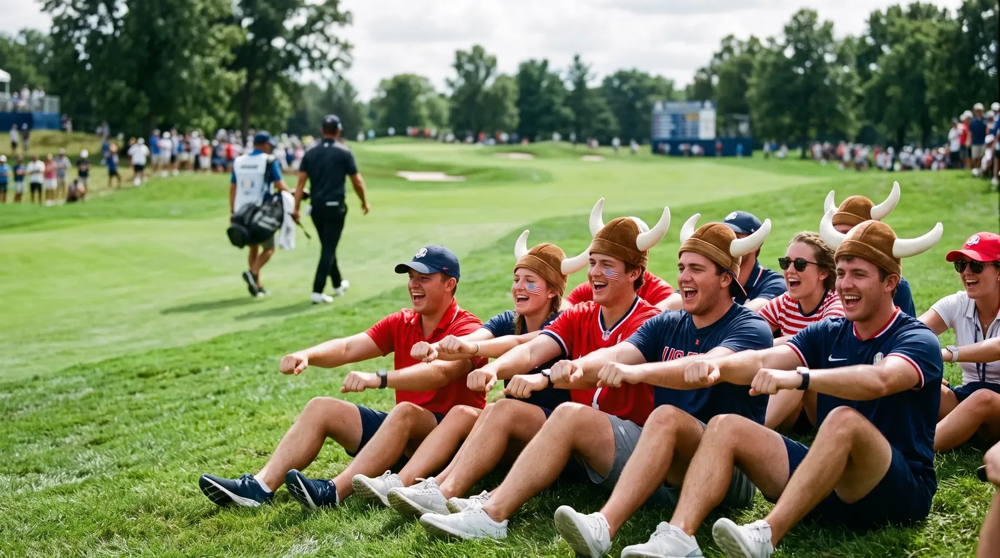
CULTURE · TOUR HISTORY
Viktor Hovland brought more than a hot game to Cromwell—he brought a rowing, chanting football gallery of countrymen. Inside the Travelers' viral, good-natured crowd takeover.
BY GOLF RAW STAFFSUN 28 JUN
GUIDES · INSTRUCTIONAL
The foundation of every good swing begins with your hands. We break down finger placement, strong vs weak grips, and how to eliminate tension in this step-by-step guide.
BY GOLF RAW STAFFSUN 28 JUN
NEWS · COLLEGE GOLF
NIU Huskies golf has hired former Menlo assistant Ryan Stefko. We analyze what his dual-program development experience brings to John Carlson and Kim Kester's staffs.
BY GOLF RAW STAFFSUN 28 JUN
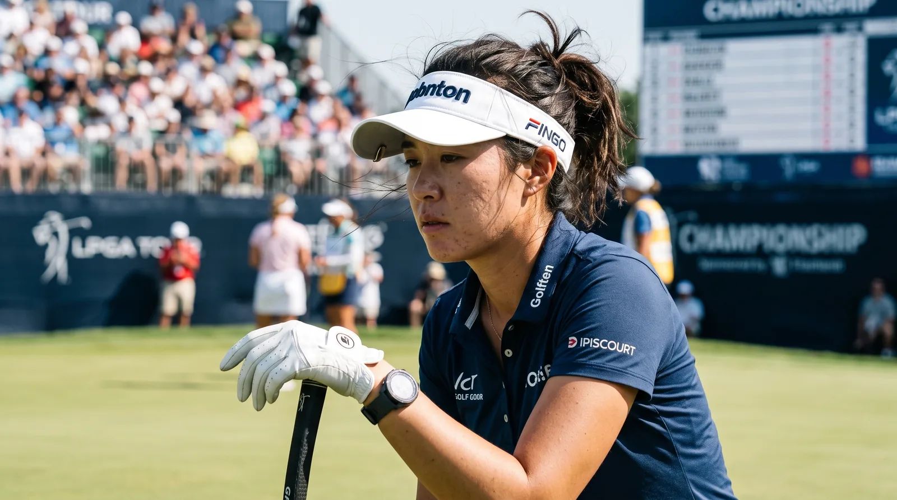
TOURNAMENTS · LPGA
Brooke Henderson sits just one shot off the lead at Hazeltine, chasing her third major title on the very week her niece Sahalee was born. Inside Sunday's high-stakes LPGA setup.
BY GOLF RAW STAFFSUN 28 JUN

TOURNAMENTS · ARCHITECTURE
Tucked away by Lake Delta, Teugega Country Club ranks as one of the country's most pristine Donald Ross designs. We explore its rich history and architectural genius.
BY GOLF RAW STAFFSUN 28 JUN
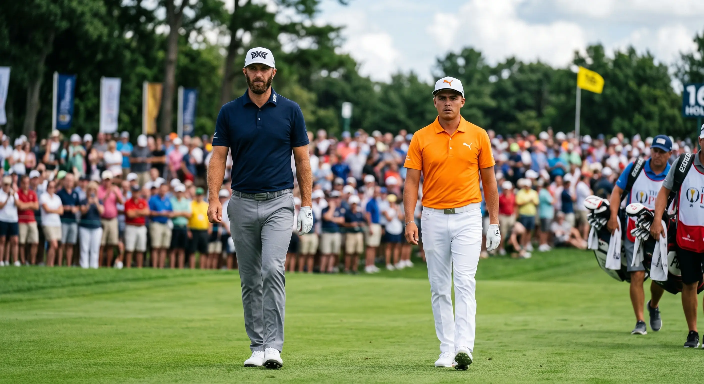
TOURNAMENTS · TRAVELERS
Viktor Hovland fired a 6-under 64 to snatch a one-shot lead over Scottie Scheffler at 20-under par. We analyze Saturday's high-stakes Moving Day battle at TPC River Highlands.
BY GOLF RAW STAFFSUN 28 JUN
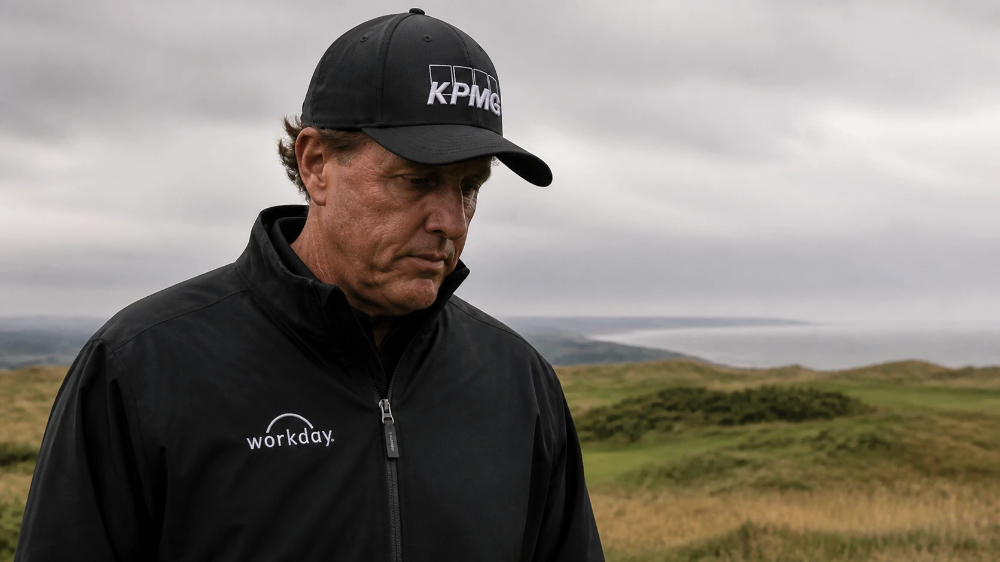
TOURNAMENTS · THE OPEN
Following his official Open withdrawal, Phil Mickelson is set to record his first year of missed majors in 2026, bypassing Royal Birkdale. We analyze the timeline and facts.
BY GOLF RAW STAFFSUN 28 JUN
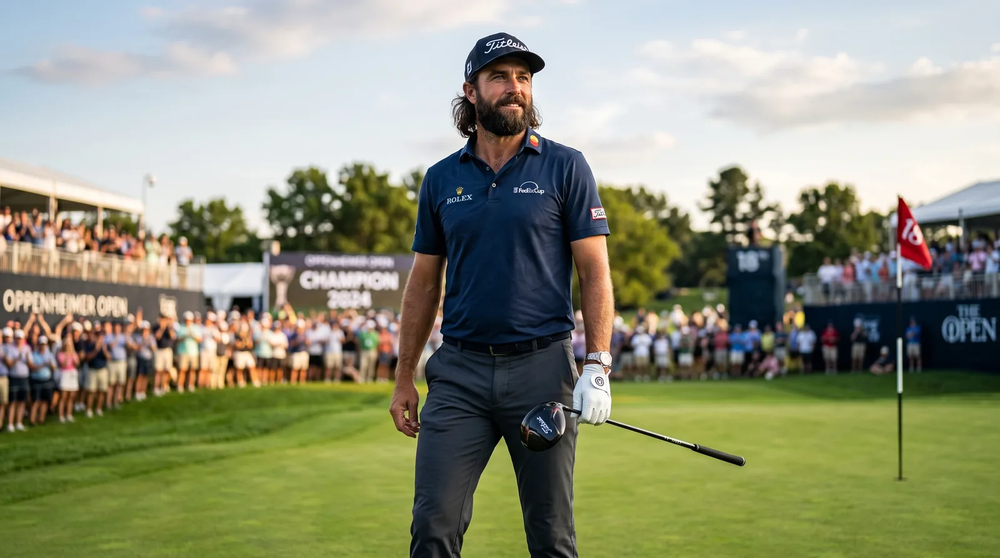
TOURNAMENTS · TRAVELERS
Tommy Fleetwood returns to TPC River Highlands seeking redemption after a heartbreaking loss. We analyze how his first PGA Tour win at the Tour Championship changed everything.
BY GOLF RAW STAFFSAT 27 JUN
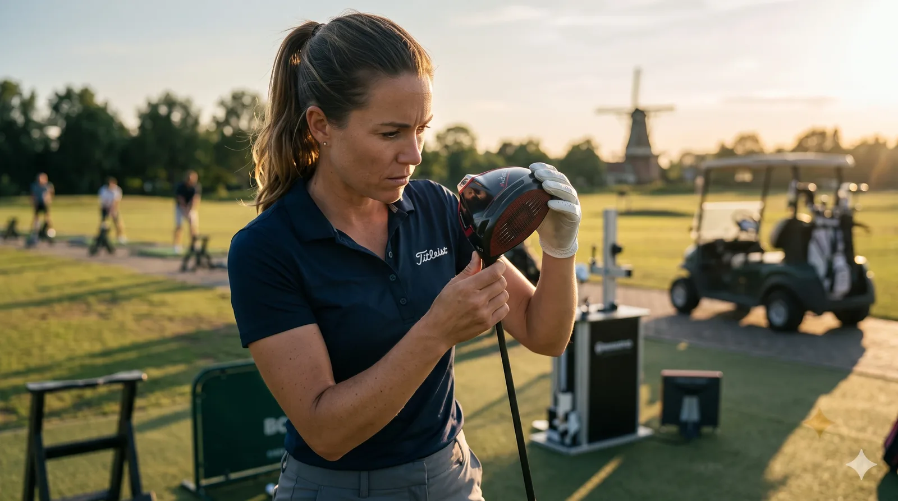
GUIDES · GEAR
Even elite tour pros get sabotaged by the wrong driver. Discover what Matt Fitzpatrick's driver switch teaches us about golf driver fitting and matching your club vs swing.
BY GOLF RAW STAFFFRI 26 JUN
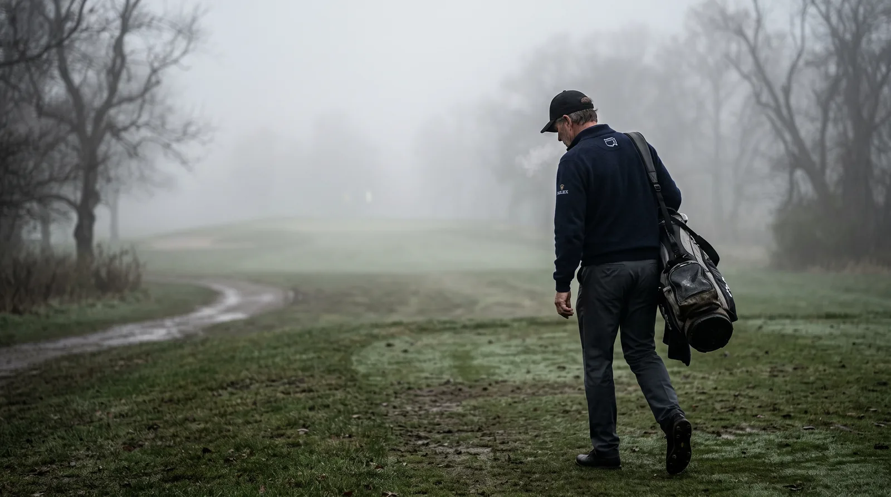
NEWS · FALLOUT
NEW
Following the recent Golf Digest report and Alan Shipnuck biography, the Phil Mickelson misconduct allegations have led to club departures and a retreat from public life.
BY GOLF RAW STAFFFRI 26 JUN
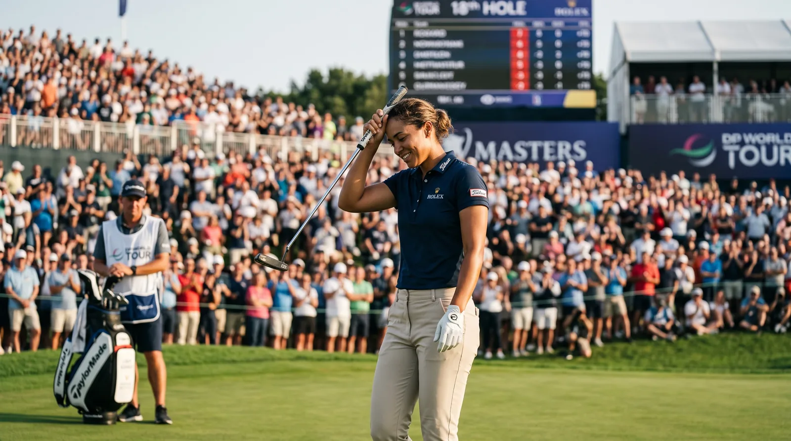
TOURNAMENTS · TRAVELERS
NEW
Scottie Scheffler fired a 10-under 60 in Friday's second round at TPC River Highlands, coming within one putt of a 59 before shrugging it off in classic fashion.
BY GOLF RAW STAFFFRI 26 JUN
TOURNAMENTS · TRAVELERS
NEW
Eric Cole stuns the field with a 63 to lead the Travelers Championship Round 1, but world No. 1 Scottie Scheffler and Matt Fitzpatrick lurk just one back.
BY GOLF RAW STAFFFRI 26 JUN

NEWS · COLLEGE GOLF
NEW
Midland Christian standout and Wrangler alum Bryce Waters returns to West Texas as the new head Odessa College Golf Coach for both the men's and women's programs.
BY GOLF RAW STAFFFRI 26 JUN

GEAR REVIEW · 2026
NEW
Buy a proven SIM2 Max at a fraction of new-release prices, or tune your Qi10 / Paradym Ai Smoke with custom weights. The smartest tee upgrades for 2026.
BY GOLF RAW STAFFTHU 26 JUN

NEWS · ANALYSIS
NEW
McIlroy turned down a $20M Signature Event to walk Royal Birkdale three weeks early — and bumped into the only man who truly understood why.
BY GOLF RAW STAFFTHU 26 JUN
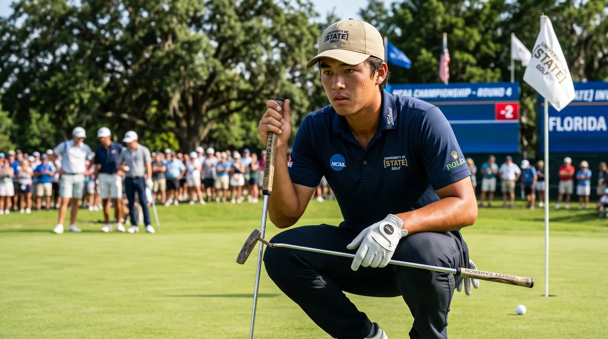
NEWS · ANALYSIS
NEW
UT Arlington Men's Golf continues its transfer portal overhaul, adding Santa Clara graduate Joseph Hayden. We break down what Hayden brings to the Mavericks.
BY GOLF RAW STAFFTHU 25 JUN
NEWS · ANALYSIS
NEW
The PGA Tour is policing fans who heckle players over lost bets—while cashing checks from the sportsbooks that fuel it. Inside golf’s toxic, lucrative wagering dilemma.
BY GOLF RAW STAFFTHU 25 JUN
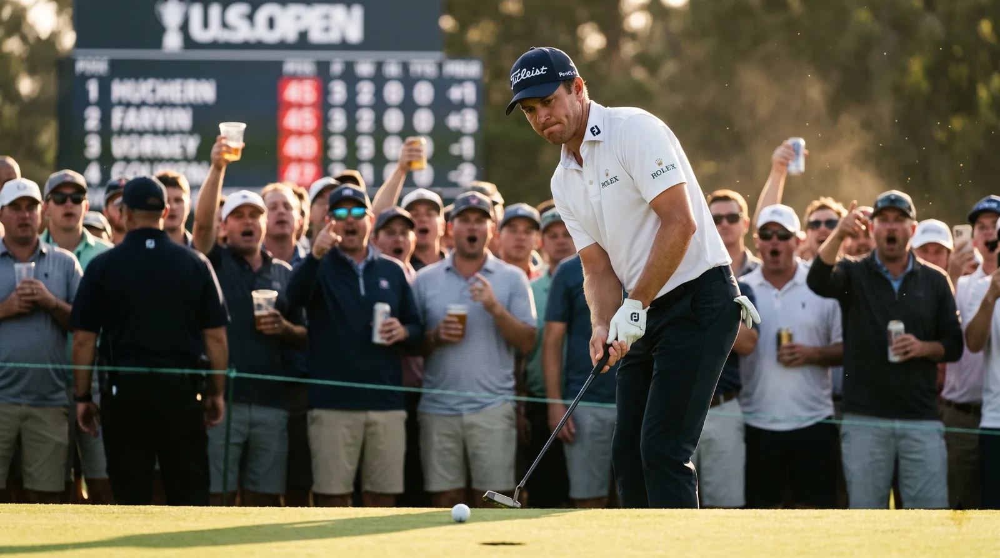
NEWS · ANALYSIS
NEW
Golf crowds are getting louder, more partisan, and occasionally hostile. We analyze the forces driving this shift and what it means for the game.
BY GOLF RAW STAFFTHU 25 JUN
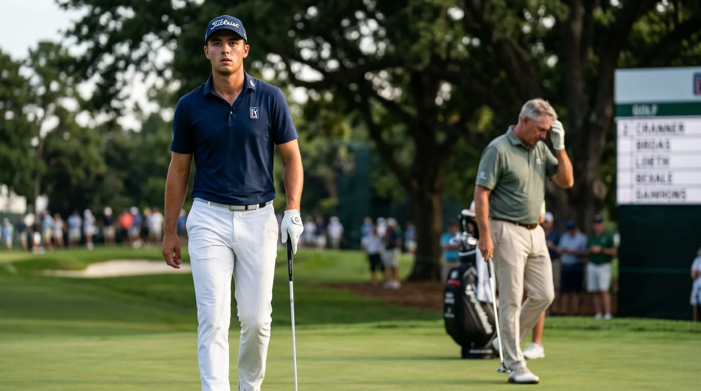
NEWS · ANALYSIS
NEW
The PGA Tour's newly announced 2028 restructure establishes a clean, two-tier split. We analyze the fallout and expose who gets squeezed.
BY GOLF RAW STAFFTHU 25 JUN
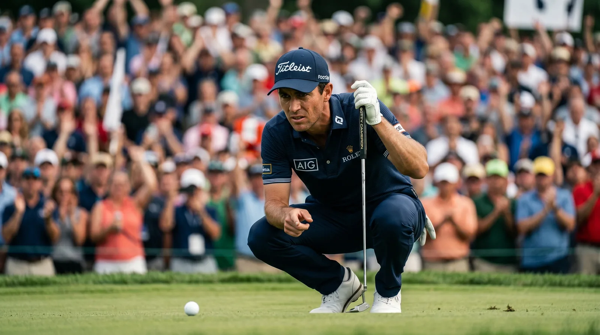
NEWS · BETTING
NEW
Scottie Scheffler is the clear favorite, but TPC River Highlands is short and scoreable, presenting massive value on undervalued names down the board.
BY GOLF RAW STAFFTHU 25 JUN
NEWS · OFF-COURSE
NEW
Country star Kane Brown was hit in the head by a stray golf ball, forcing him to cancel a major Nashville performance.
BY GOLF RAW STAFFWED 24 JUN
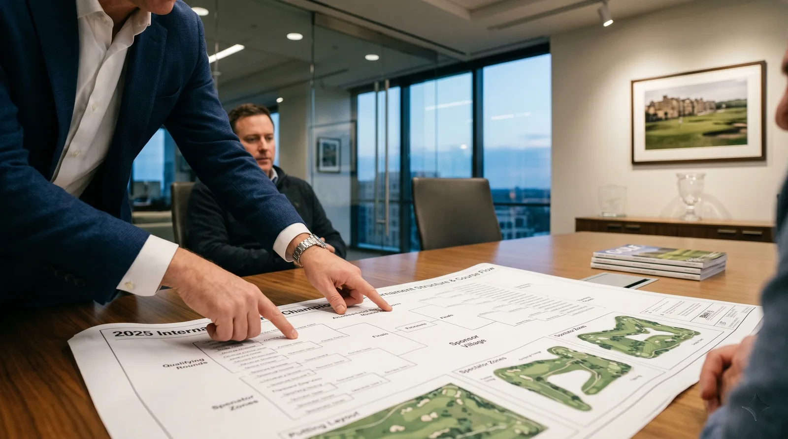
ANALYSIS · TOUR
NEW
We break down the structural changes for 2028: two tiers, promotion, and relegation. Plus, the big questions the Tour hasn't answered yet.
BY GOLF RAW STAFFWED 24 JUN
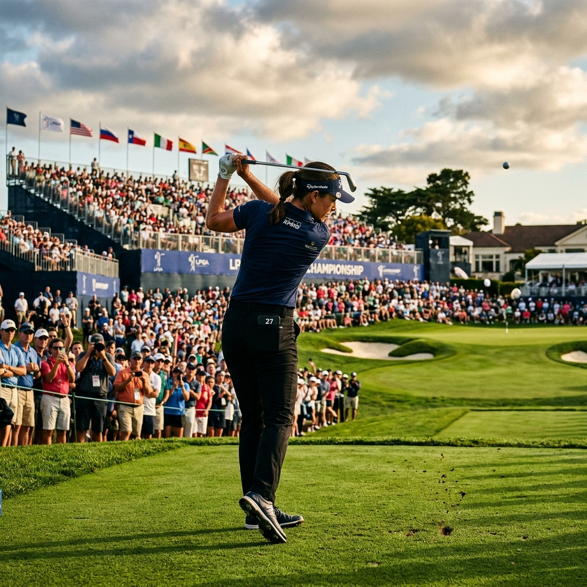
NEWS · PREVIEW
NEW
Nelly Korda goes for her third straight major at the KPMG Women's PGA, while Scottie Scheffler and Wyndham Clark headline the Travelers Championship.
BY GOLF RAW STAFFWED 24 JUN
NEWS · EXECUTIVE
BREAKING
Rolapp will add the commissioner title to his CEO role in 2027, taking over from Monahan. Here is what the massive leadership shift means for the Tour.
BY GOLF RAW STAFFTUE 23 JUN
NEWS · PLAYERS
BREAKING
Woods returned to the public eye at the Travelers Championship to introduce the PGA Tour's new 2028 structure. Here is what happened and the context behind his brief return.
BY GOLF RAW STAFFTUE 23 JUN
Gear · Reality Check
INDUSTRY LIE
Discover Scottie Scheffler's complete What's in the Bag (WITB) for 2026. Explore his driver, irons, wedges, and the putter setup driving his success.
BY RAWGOLF STAFFFRI 13 JUN
Tournaments · Analysis
HOT DEBATE
One is a 72-hole mental math test, the other is a street fight. See why the PGA Tour is terrified of match play.
BY RAWGOLF STAFFFRI 13 JUN
Data · The Vault
EVERGREEN
The stat that changed how every tour pro is evaluated. Here's what it actually measures — and how to read a leaderboard with it in five minutes.
RAWGOLF DATA DESKTHU 12 JUN